1450 m

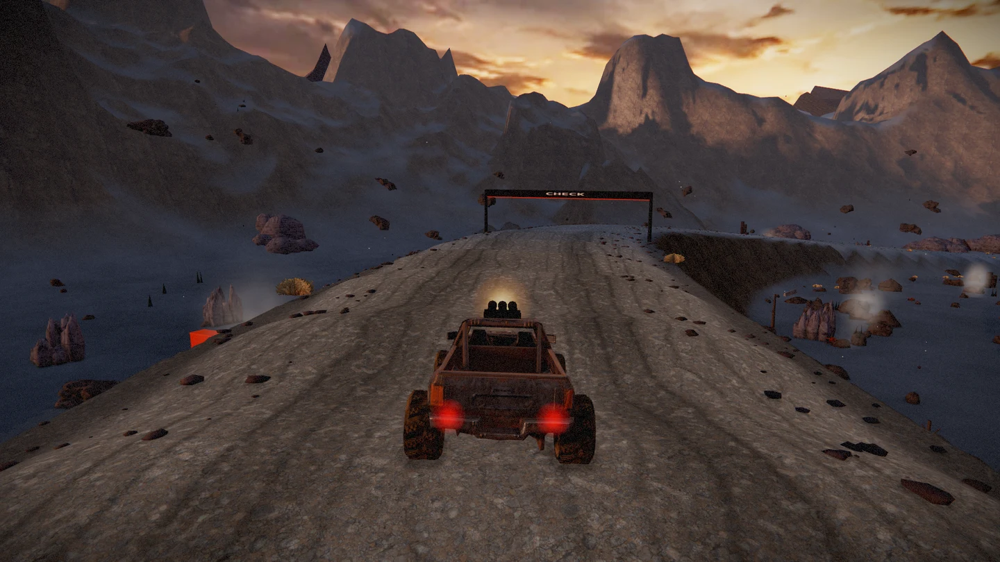
Steeper crater terraces, connected basalt rubble, textured distant slopes, gravel shoulders and worn driving lines. Animated ground steam, drifting ash and occasional embers add movement throughout the course.
Art-direction target, not gameplay. It guides geological density, surface detail and atmospheric effects; the browser renderer does not reproduce its photorealistic fidelity.
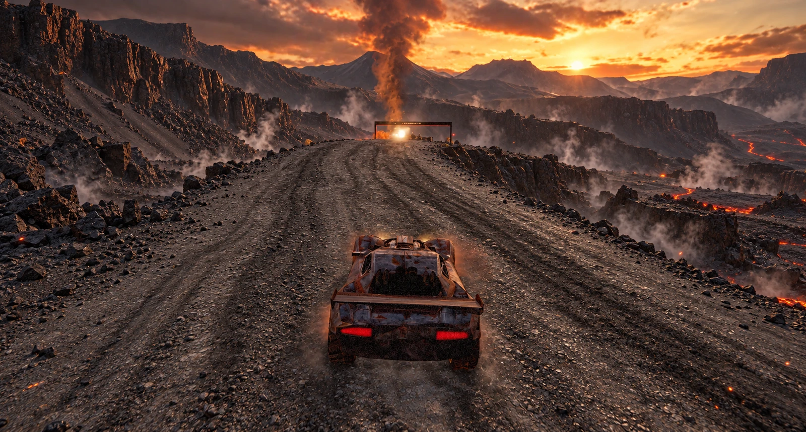


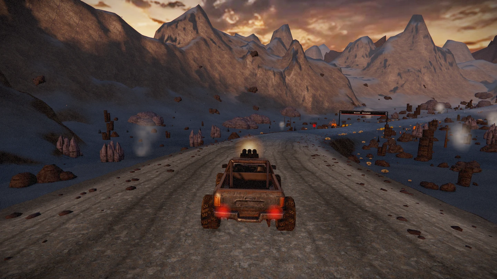
Fourteen High-quality driving-camera views around the 2,000 m course. Steam and ash animate during play; still images show one moment.
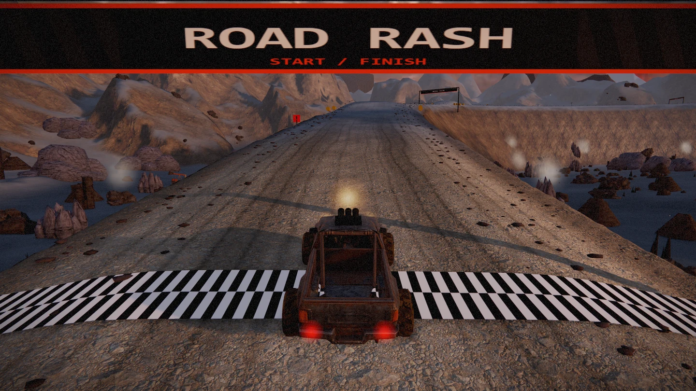
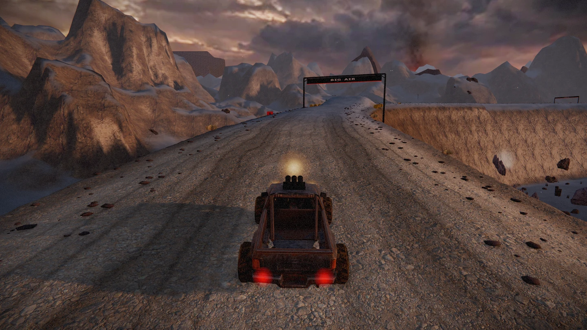
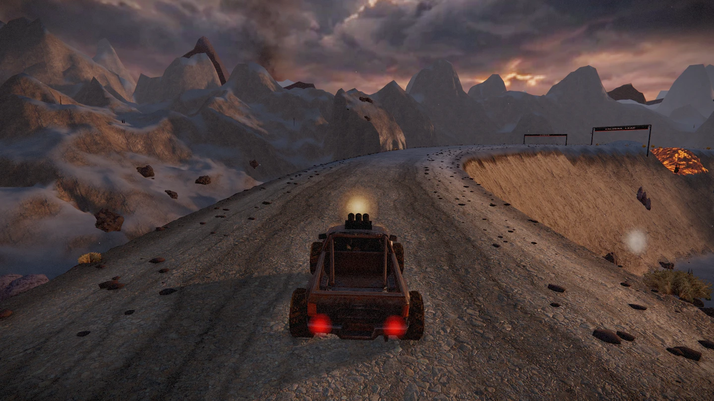
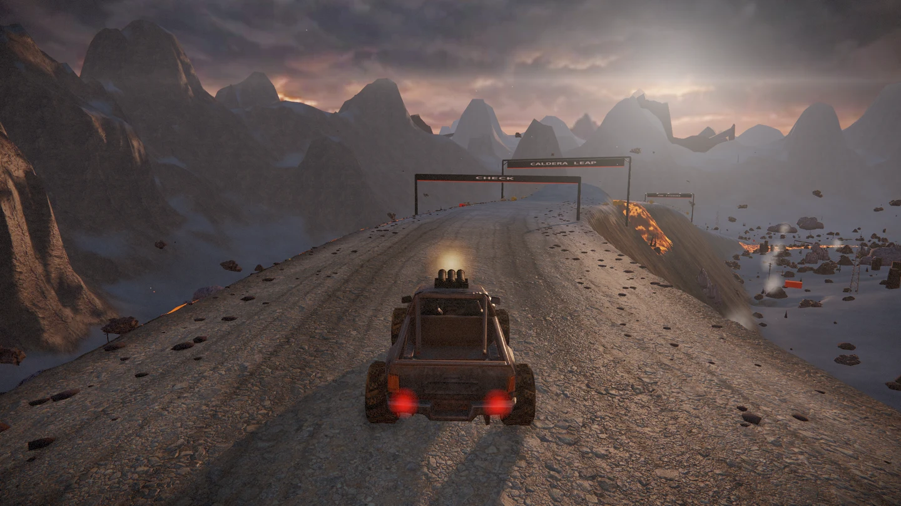
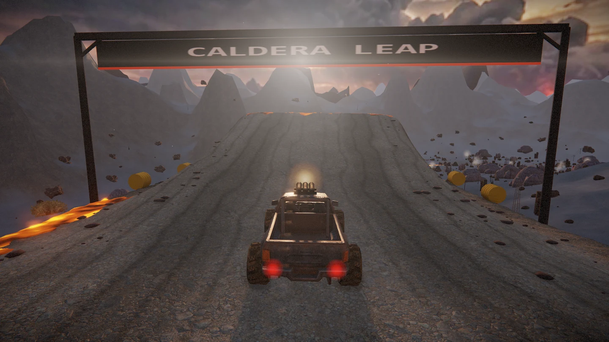
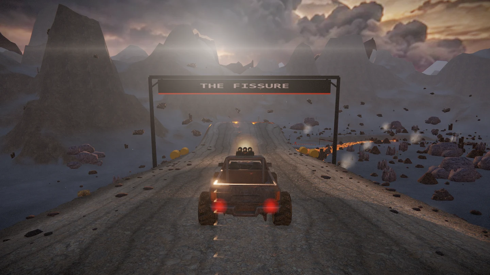
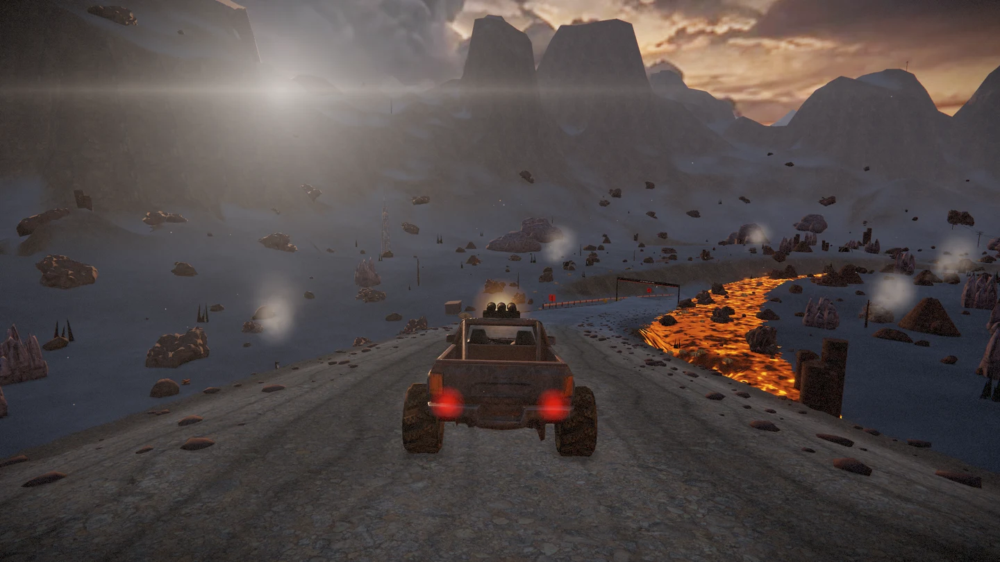
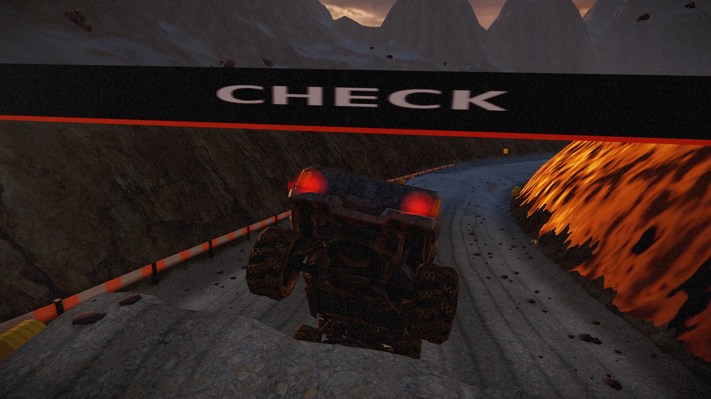
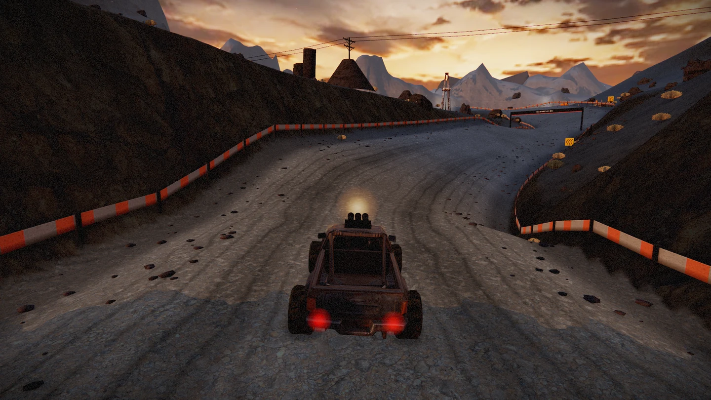
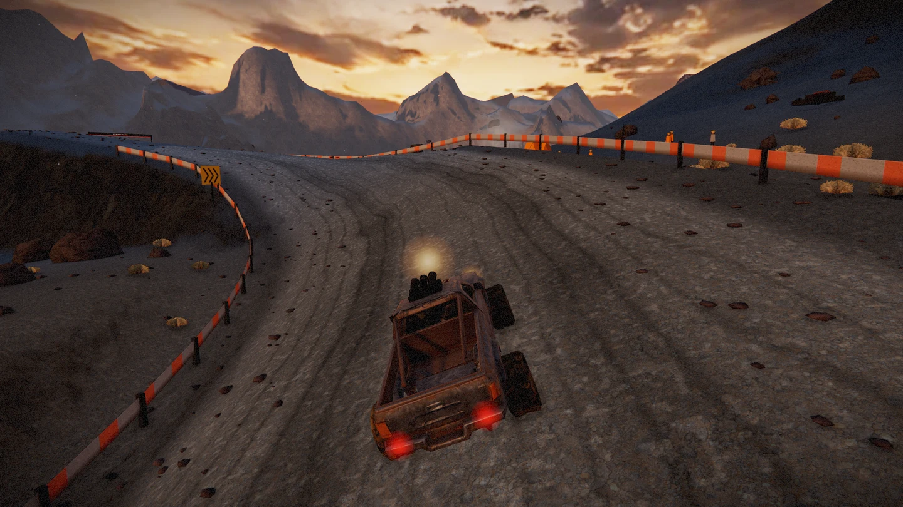
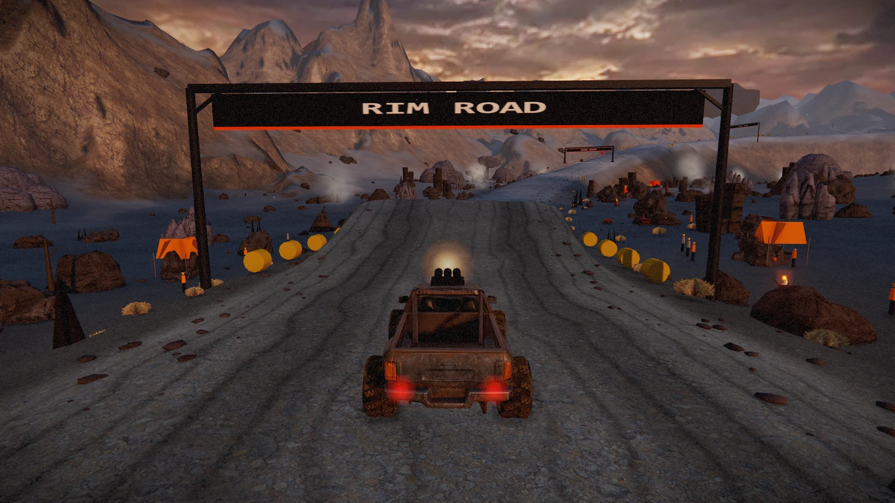
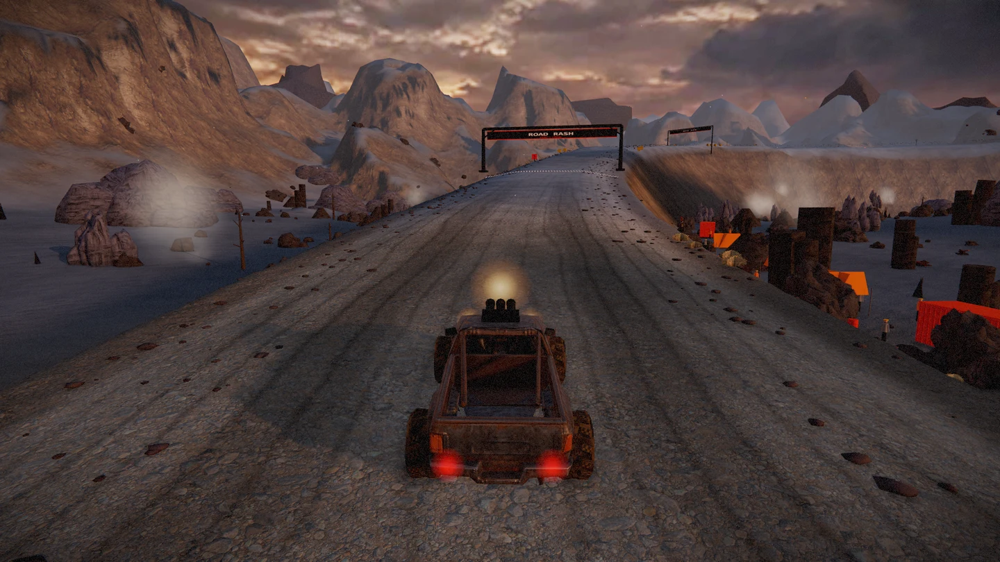